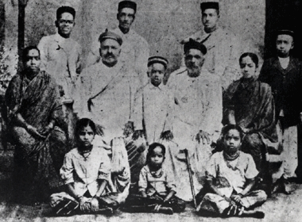
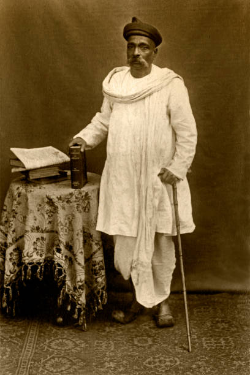
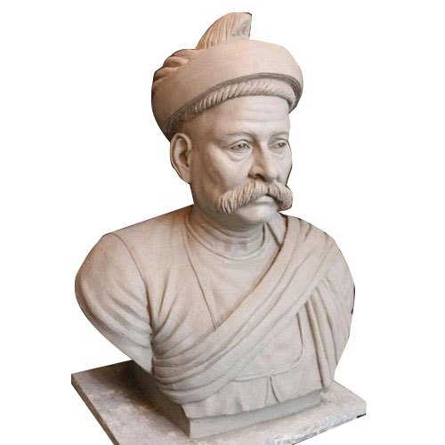
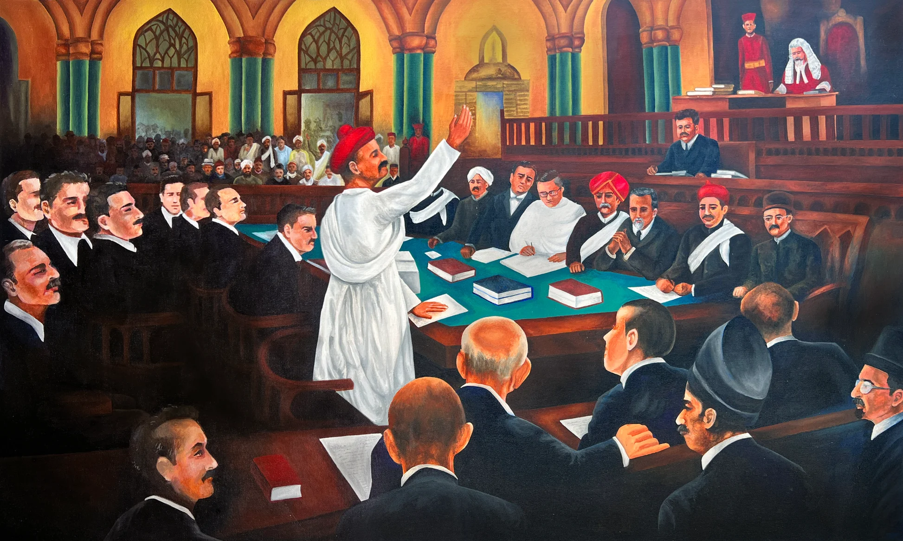

Early Life
Bal Gangadhar Tilak, born on July 23, 1856, in Ratnagiri, Maharashtra, was a prominent freedom fighter and nationalist leader. He is remembered as one of the first leaders of the Indian independence movement.
Achievements
Tilak is famously known as the "Father of Indian Unrest." He founded the Kesari newspaper and led the Home Rule Movement to demand self-governance for India. His slogan, "Swaraj is my birthright and I shall have it," became a rallying cry for freedom.
Legacy
Tilak's contributions to India's independence left a lasting impact. His efforts in promoting education and Indian culture are still celebrated today. He is considered one of the key architects of modern India.
Key Writings
Bal Gangadhar Tilak was a prolific writer and thinker. His most important works include "Gita Rahasya" and various editorials written for the Kesari newspaper. These writings continue to inspire many to this day.
- Gita Rahasya - A commentary on the Bhagavad Gita, emphasizing the importance of selfless action and duty.
- Kesari Editorials - A collection of editorials from the Kesari newspaper that highlighted the Indian struggle for freedom.
Influence on Modern India
Tilak's concept of Swaraj and his ideas about Indian nationalism have had a profound impact on modern India's political landscape. His advocacy for self-governance and cultural revival continue to influence contemporary India.
Learn More
Explore more about Lokmanya Tilak through the following links:
Condolence Message
Express your condolences and share your thoughts in memory of
Lokmanya Bal Gangadhar Tilak.